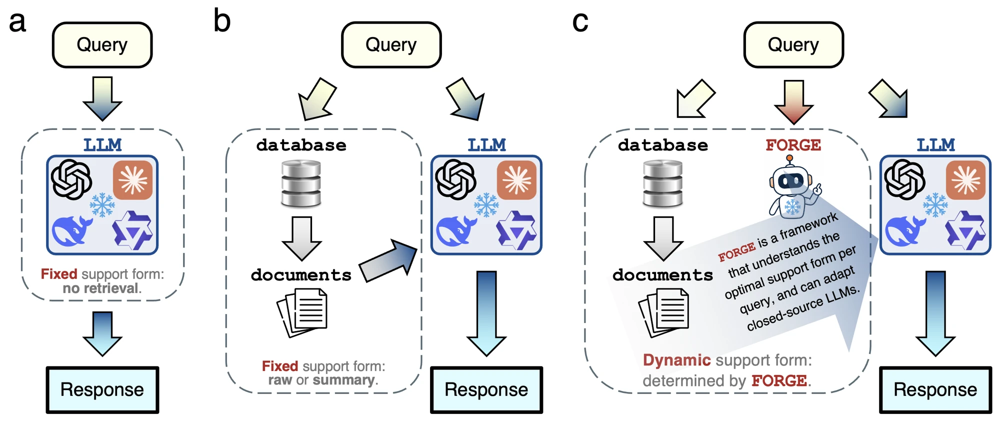
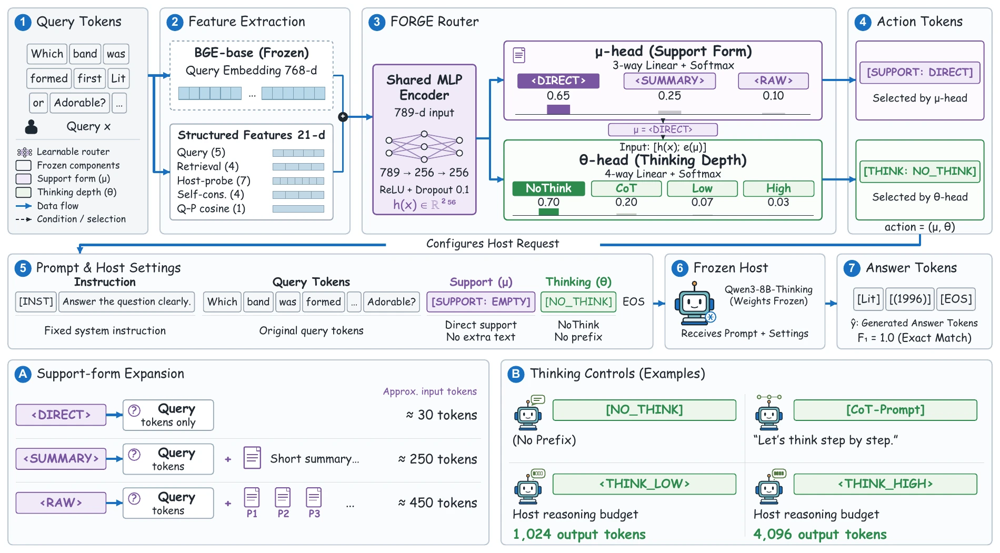
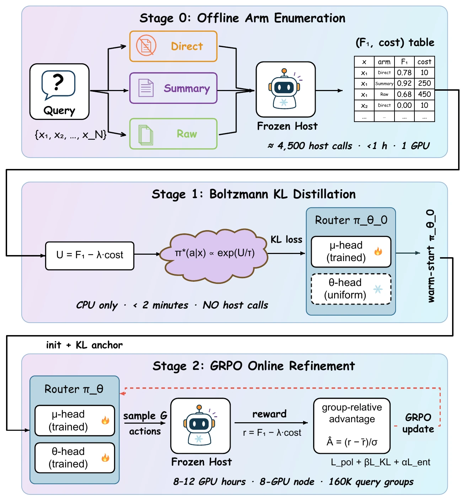

FORGE: Form-Optimal Routing of Grounded Evidence for Frozen LLM Agents
“Choose the evidence. Set the reasoning.
Keep the model frozen.”
A different question. A different route.
An illustrative walkthrough of one joint decision before the frozen host answers.
How much evidence?
How much reasoning?
A frozen language model can still adapt through what we put around it. But always retrieving full passages—or always thinking longer—can waste tokens and sometimes hurt accuracy.
FORGE makes the two choices together. A small router selects an evidence form and a reasoning depth for each query, balancing answer quality against input and output token cost. The host’s weights stay frozen.
parameters · six-action router
fewer cached answer tokens
frozen backbones · 5 benchmarks
Token savings: FORGE vs. Always-Raw on the two main hosts, with precomputed features (Table 1). Fresh Online costs are reported below.

Two decisions.
One lightweight policy.
Select the support form μ and the thinking depth θ together, before generating the answer.
What evidence to provide
How much to reason
6 joint actions on non-thinking hosts.
12 where thinking controls are available.

Learn around the frozen host.
One cost-aware objective connects all three training stages.
- STAGE 0
Enumerate
Evaluate Direct, Summary, and Raw with NoThink on 1,500 training queries. Record answer F1 and token cost.
- STAGE 1
Distill
Fit the warm-start policy to a closed-form Boltzmann target through KL distillation.
- STAGE 2
Refine
Expand to the full joint action space, then refine with GRPO host feedback and a KL anchor.
See the three-stage training diagram

Better answers.
More selective token use.
Five-task macro F1 on Qwen3-8B and Mistral-7B. Explore both evaluation protocols.
Cached · Qwen3-8B
Features are precomputed. Token cost counts the selected answer only; it excludes fresh feature probes.
Answer quality
Macro F1 (%) · higher is betterToken cost
k tokens / query · lower is betterCached values: Table 1. Fresh Online values: Table 2, batch size 1, including every host call and input/output token. Bars share fixed zero-based scales.
Train on one host.
Route for others.
A Qwen-trained Full router transfers without target-host Stage 2. It matches or exceeds Always-Raw F1 in 11 of 15 task–host cells.
Zero-shot Cached protocol. Cost excludes fresh feature probes.
| Target host | F1 Raw → FORGE | Tokens (k) Raw → FORGE |
|---|---|---|
| Llama-3.3-70B | 58.5 → 61.2 | 0.318 → 0.205 |
| DeepSeek-V3.2 | 63.4 → 63.4 | 0.287 → 0.176 |
| Qwen3.5-397B | 63.1 → 65.6 | 0.305 → 0.198 |
Form-optimal routing,
around a frozen model.
In agentic AI systems, frozen foundation models are increasingly deployed as closed-weight API endpoints, making downstream adaptation possible only through the inputs and inference procedures surrounding the model. For each query, FORGE jointly selects what evidence to provide and how much reasoning budget to allocate. Under an entropy-regularized, cost-aware utility objective, we derive a closed-form Boltzmann routing target and instantiate it as a lightweight 269K-parameter factorized router. Offline arm enumeration, supervised KL distillation, and GRPO refinement train the policy around the frozen host without weight access. Across five knowledge-intensive benchmarks and eight frozen backbones, FORGE improves the quality–cost trade-off, transfers across hosts, and composes with intrinsic thinking controls where available.
Read the paperBuild on FORGE.
@misc{xiao2026forge,
title={FORGE: Form-Optimal Routing of Grounded Evidence for Frozen LLM Agents},
author={Xi Xiao and Yunbei Zhang and Chen Liu and Lin Zhao and Jialin Chen and Tianchen Zhao and Xiang Xu and Youngeun Kim and Tianyang Wang and Min Xu},
year={2026},
note={Preprint},
url={https://xixiaouab.github.io/projects/FORGE/}
}